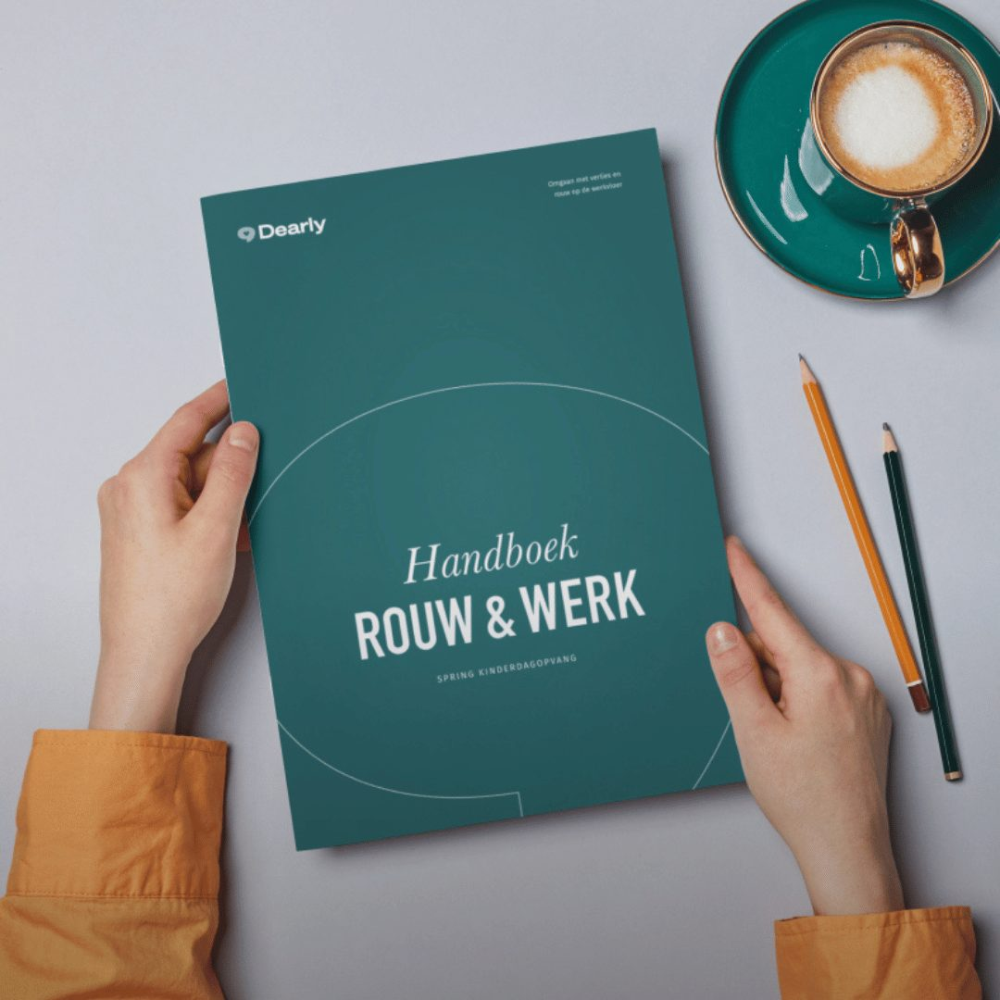

Voor medewerkers
Er speelt iets. Je hoeft het niet alleen te doen.
Werkt je organisatie met Dearly? Dan vraag je vertrouwelijk begeleiding aan. Je werkgever regelt de kosten en leest niet mee.

Je begeleiderFijn dat je er bent. Vertel maar wat er speelt, in je eigen woorden.
Waar het over kan gaan
OverlijdenScheidingZiekteZorgen voor een naasteJe baan kwijtOngewenste kinderloosheidEen ongeval op het werkEen reorganisatieHet verlies van een collegaIets anders
Je hoeft niet te weten wat je nodig hebt. Dat zoeken we samen uit.
Zo werkt het
 1
1VandaagLog in met de link van je werkgever
Vertel kort wat er speelt
Een paar zinnen is genoeg. Je kiest zelf hoeveel je deelt.
 2
2Binnen enkele dagenKennismaking van twintig minuten
Kennismaken
Met een begeleider bij jou in de buurt. Klikt het niet? Dan zoeken we iemand anders.
 3
3Vijf sessiesOp locatie, online of wandelend
Op jouw manier
Praten, wandelen, schrijven of iets maken. Je begeleider sluit aan op wat bij jou past.
Wat je vertelt, blijft bij jou.
Je werkgever leest niet mee
HR ziet alleen cijfers over het hele programma. Nooit wie, nooit waarom.
Jij beslist wat je deelt
Je begeleider deelt niets zonder jouw toestemming.
Je betaalt niets
Je werkgever regelt de kosten.
Wie je kunt treffen
Begeleiders met naam, gezicht en specialisme. Bij jou in de buurt.
Daniella Keijsers
Begeleider, Noord-BrabantBekijk profielCoosje Wentink
Begeleider, Amsterdam en LimburgBekijk profielGratis gidsen
Voor jou. En voor je collega's.
Handvatten voor de eerste weken. En een gids voor collega's die willen helpen, maar niet weten hoe.

Werkt je organisatie nog niet met Dearly?
Stuur deze pagina naar HR of je leidinggevende. Dan kijken we samen wat mogelijk is.
Stuur naar HRStuur deze pagina naar HR of je leidinggevende. Dan kijken we samen wat mogelijk is.